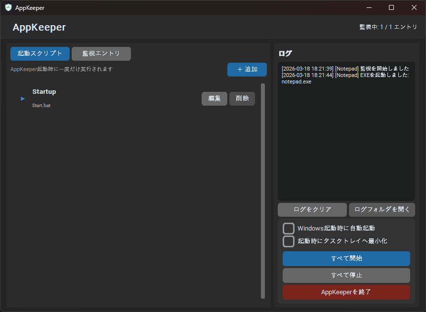
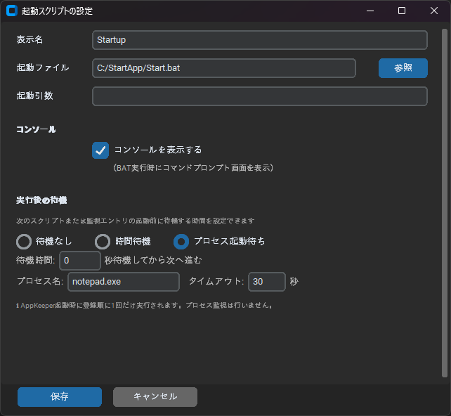
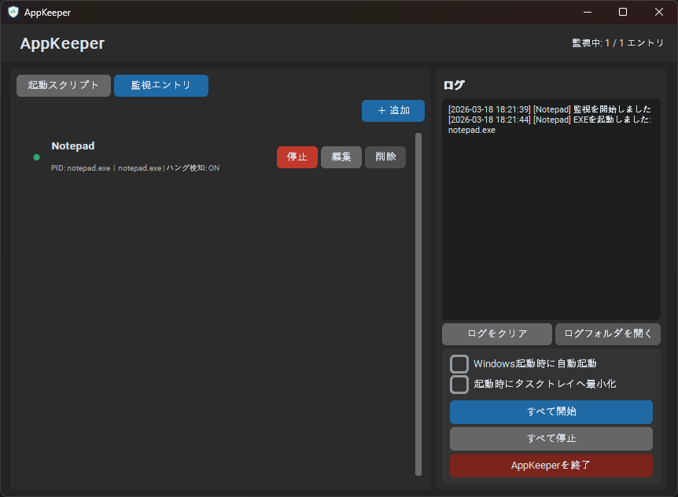
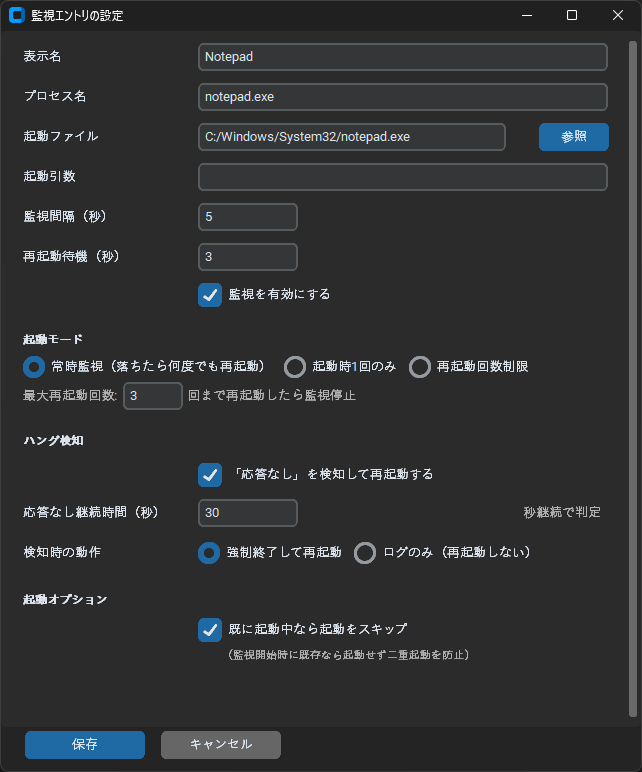

最終更新: 2026年3月
「AppKeeper」は、Windows上で動作する各種アプリケーションやスクリプトの起動管理・死活監視を自動化するためのツールです。特に「起動時に一度だけ実行したい処理」と「その後の常時監視」をシームレスに連携させることで、無人環境での安定稼働を実現します。
PC起動時に一度だけ実行が必要な初期化用BATファイルや、ライセンス認証ツールなどを登録します。AppKeeperは登録された順番にスクリプトを実行し、指定された待機条件が満たされるまで次の処理を保留します。

図1：起動スクリプト管理画面（タブ形式）以下の画像は、実際の運用環境での設定例です。BATファイルを実行した後、特定のプロセスが立ち上がるのを待機する設定になっています。

図2：起動スクリプトの設定詳細| 項目 | 説明 |
|---|---|
| コンソールを表示する | チェックを入れると、BAT実行時にコマンドプロンプト画面が表示されます。デバッグや進捗確認に有効です。 |
| 待機モード | 「プロセス起動待ち」を選択することで、アプリ本体（例：notepad.exe）が起動するまで、AppKeeperは監視フェーズへの移行を待機します。 |
| タイムアウト | 指定時間内にプロセスが起動しなかった場合、待機を打ち切って次へ進みます。 |
アプリケーションが正常に立ち上がった後、24時間体制でその状態を監視し、異常時に再起動を行うための設定です。

図3：監視エントリ管理画面起動スクリプトと併用する場合、最も重要なのが「起動オプション」の設定です。

図4：監視エントリの設定詳細| 項目 | 説明 |
|---|---|
| 常時監視モード | プロセスが落ちた場合に、何度でも自動で再起動を試みます。 |
| ハング検知 | ウィンドウが「応答なし」になった場合に、強制終了して再起動します。 |
AppKeeperがどのように処理をバトンタッチしているかは、右側のログパネルでリアルタイムに確認できます。
[2026-03-18 15:00:43] [起動スクリプト] 実行しました: startup [2026-03-18 15:00:43] [起動スクリプト] プロセス起動待ち: notepad.exe (最大120秒) [2026-03-18 15:01:50] [起動スクリプト] プロセス確認完了: notepad.exe (58秒後) [2026-03-18 15:01:50] [notepad] 監視を開始しました [2026-03-18 15:01:50] [notepad] プロセスが既に起動中のため初回起動をスキップしました（監視は継続）
このログの流れは、「起動スクリプトがアプリを立ち上げ、AppKeeperがその起動を確認した後に監視に移行し、二重起動を回避した」という完璧な連携を示しています。
.bat を登録。.exe 名を入力。© 2026 AppKeeper Project - All Rights Reserved.